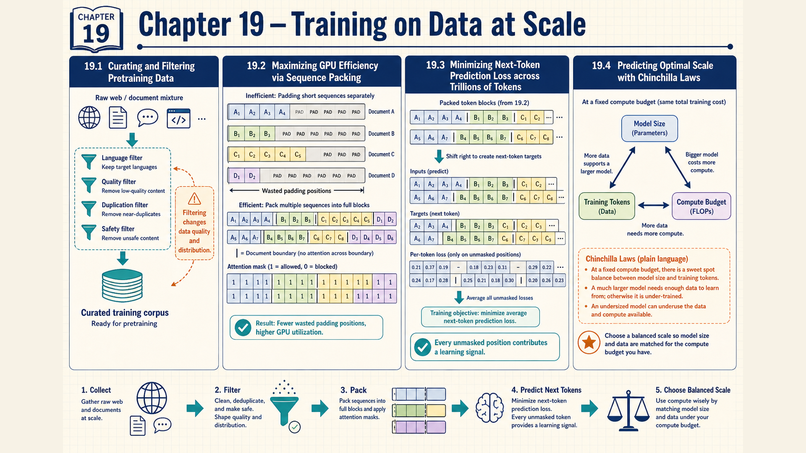
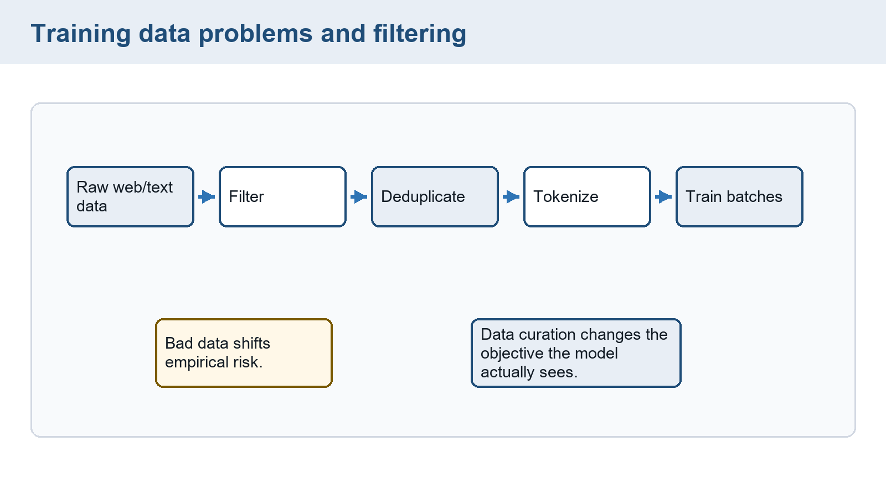

19 Pretraining Data and Scaling
Pretraining repeats the same prediction objective over very large corpora. The data, model size, and available compute jointly determine what can be learned and at what cost.
Pretraining repeats next-token or masked-token learning over large, filtered corpora. Data quality, sequence packing, parameter count, and compute budget jointly affect the resulting model and the cost of producing it.
In code, Hugging Face datasets loads and streams corpora, tokenizer calls create model-ready sequences, and data collators pack or pad them before loss computation.
Chapter 19 develops one required stage of the guide’s computation.

The numbered panels correspond to the chapter sections and show how each local result supplies the next operation.
19.1 Curating and Filtering Pretraining Data
Pretraining is not just running an optimizer on all available text. The course data slides make data curation part of the mathematical setup.
- Corpus mixture: The weighted blend of sources used in training.
- Filtering: Removing or downweighting examples based on quality, language, safety, or metadata.
- Deduplication: Removing exact or near-duplicate examples to reduce memorization and leakage.
Changing the corpus changes the empirical distribution. The same model and optimizer trained on a different mixture receive different gradients and therefore learn different behavior.
Filtering removes examples that violate quality, language, privacy, safety, or licensing criteria. Deduplication reduces repeated examples and contamination between training data and evaluation sets. Mixture weights determine how often each remaining source contributes a training sequence, so data preparation changes the empirical objective before any optimizer step occurs.
Sequence packing concatenates or groups tokenized documents to use fixed-length training blocks efficiently. Boundary markers and loss masks define valid token transitions. Without them, a batch could accidentally train the model to predict the start of one document from the end of an unrelated document.
A training corpus can be viewed as a weighted mixture of source distributions.
Mixture distribution:
\[ P_{\mathrm{data}}=\sum_s\alpha_sP_s,\quad\sum_s\alpha_s=1 \tag{19.1}\]
where \(\alpha_{s}\) is mixture weight for source s; \(P_{s}\) is distribution of source s.
Sampling from a corpus mixture first chooses a source according to α, then chooses an example from that source.
changing mixture weights changes the empirical distribution and therefore the gradients.
Example: Mixture distribution
If code has mixture weight \(\alpha_{\mathrm{code}}=0.3\) and books have mixture weight \(\alpha_{\mathrm{books}}=0.7\), then ideal sampling draws about \(30\%\) of examples from code.
Filtering changes which language patterns and errors reach the loss. Packing determines how those examples are arranged into efficient batches.
19.2 Maximizing GPU Efficiency via Sequence Packing
Sequence packing combines shorter tokenized examples into fixed-length training arrays while retaining boundaries for attention and loss masking.
- Sequence packing: Combining several shorter examples into one fixed-length training sequence while preserving boundaries or masks.
- Source-mixture weight: The probability assigned to a source when sampling the next training example or token.
Packing improves GPU efficiency when examples are shorter than the model context window, but boundaries must remain visible to the loss or attention mask. Otherwise one example can condition on unrelated text from the next example.
Changing source-mixture weights changes the empirical distribution seen by the optimizer. Deduplication changes both the number of training tokens and the amount of repeated evidence, so it can affect memorization and evaluation contamination.
Packing efficiency measures how much allocated sequence space contributes supervised tokens.
Packed-token utilization:
\[ \operatorname{utilization}=\frac{\mathrm{supervised\,tokens}}{\mathrm{allocated\,positions}} \tag{19.2}\]
where \(supervised_{tokens}\) is token positions included in the loss; \(allocated_{positions}\) is available positions in the packed batch tensor.
Count the positions that contribute to the objective and divide by the positions allocated in the rectangular batch tensor.
Padding, separators, and ignored positions reduce utilization even when the allocated tensor is full.
A source mixture defines the probability of drawing data from each source distribution.
Source mixture:
\[ P(\mathrm{data})=\sum_s\alpha_sP_s(\mathrm{data}),\quad\sum_s\alpha_s=1 \tag{19.3}\]
where s is source index; \(\alpha_{s}\) is sampling weight for source s; \(P_{s}\) is distribution of source s; P(data) is combined training distribution.
Sampling first selects a source with probability \(\alpha_{s}\) and then samples an item from that source. The law of total probability gives the weighted sum.
The weights \(\alpha_{s}\) change which examples and token patterns contribute most often to the training gradient.
Example: Packed-token utilization
If a packed batch allocates 1,024 positions and 900 positions contribute to the loss, utilization is 900/1,024=0.879.
Example: Source mixture
With code weight 0.3 and books weight 0.7, ten ideal draws contain about three code and seven book examples.
Packed sequences still need masks and shifted targets so each retained token contributes to the intended prediction loss.
19.3 Minimizing Next-Token Prediction Loss across Trillions of Tokens
A pretraining objective converts raw token sequences into input-target pairs without requiring manually assigned labels.
Decoder-only LLMs are commonly trained with next-token prediction. Encoder models such as BERT-style systems often use masked language modeling. Encoder-decoder models can be trained for denoising or sequence-to-sequence objectives.
The objective determines the inference interface. A next-token decoder naturally supports left-to-right generation; a masked encoder is stronger for representation and fill-in tasks but is not by itself a left-to-right generator.
Self-supervision creates targets from the text itself. That is why enormous unlabeled corpora can be used: the next token or masked token supplies the label.
Example: Autoregressive factorization
Conditional probabilities 0.5, 0.4, and 0.25 multiply to a sequence probability of 0.05.
The batch loss drives the same gradients and optimizer updates introduced earlier, now repeated over much larger data and model scales.
19.4 Predicting Optimal Scale with Chinchilla Laws
Scaling laws describe empirical relationships between model size, data, compute, and loss. They explain why modern LLM training is organized around compute budgets.
- Scaling law: An empirical power-law relationship between resources and performance.
- Compute-optimal training: Choosing model size and data tokens to minimize loss for a fixed compute budget.
- Token budget: The number of training tokens processed.
- Chinchilla rule of thumb: A compute-optimal scaling heuristic that trains with many more tokens per parameter than early very-large-model practice used.
Bigger models can underperform if they are trained on too little data. Smaller models can underperform if they cannot use the available data capacity. The design problem is a joint allocation problem.
For students, the important lesson is qualitative: architecture, data, optimization, and compute form one system. A model is not defined by parameter count alone.
The Chinchilla result provides a clear rule: for a fixed compute budget, a smaller model trained on more data often outperforms a larger model trained on too few tokens. The rough public rule of thumb of about 20 training tokens per parameter is a heuristic rather than a universal constant.
Chinchilla scaling laws prove that for compute-optimal pretraining, parameter count and training token volume should scale in equal proportion: N proportional to \(G^{0}\).5 and D proportional to \(G^{0}\).5.
Training smaller models on significantly more tokens (e.g. LLaMA) yields superior inference economics even if slightly sub-optimal for pretraining compute alone.
A compact scaling-law form relates loss to parameters N, data D, and compute C.
Scaling-law sketch:
\[ L(N,D,C)\approx L_{\infty}+aN^{-\alpha}+bD^{-\beta}+cC^{-\gamma} \tag{19.4}\]
A common compute-optimal rule of thumb relates training-token count to parameter count.
Chinchilla token heuristic:
\[ D_{\mathrm{tokens}}\approx20N_{\mathrm{params}} \tag{19.5}\]
where \(D_{tokens}\) is number of training tokens; \(N_{params}\) is number of model parameters.
The heuristic balances model size and data size under a fixed compute budget.
The value is a planning heuristic; actual recipes depend on data quality, architecture, and compute constraints.
Example: Scaling-law sketch
If \(L_{inf}=1.0\) and the three correction terms are 0.2, 0.1, and 0.05, the predicted loss is 1.35.
Example: Chinchilla token heuristic
A 7B-parameter model would suggest roughly 140B training tokens under the 20x rule.
Scaling laws summarize measured trade-offs among data, parameters, and compute. They do not replace validation or adaptation for a particular use.
19.5 Visualizing Pretraining Data Packing and Chinchilla Frontiers
Filtering, tokenization, packing, and target construction define the token distribution used for pretraining.
LLM training begins with data choices. Duplicates, low-quality text, toxicity, leakage, and domain skew change the objective before optimization starts.

Data curation is part of the mathematical training setup because it changes the empirical distribution whose loss is minimized.
Pretraining data defines the empirical distribution whose token losses produce gradients.
Adaptation changes weights, adapters, or conditioning context after pretraining.